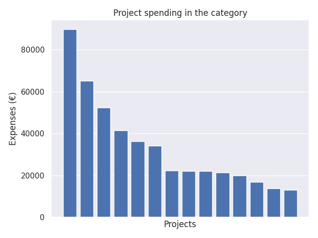

Kärkihanke 6 - Joustavan perusopetuksen (JOPO) toiminnan kehittäminen
Category summary
33.6K spent on average
89.7K highest spending

Reports in the category
Helsingin kaupungin opetusvirasto
Project name: Joustavan perusopetuksen kehittäminen
89.7K spent
Kouvolan kaupunki
Project name: JOPO-verkostosta voimaa
65.2K spent
Hyvinkään kaupunki
Project name: Joustavasti yhdessä
52.4K spent
Rauman kaupunki
Project name: JOPO-toiminnan kehittäminen
41.5K spent
Laukaan Kunta
Project name: Jopopedia
36.3K spent
Pälkäneen kunta
Project name: Pirkanmaan parastajat - JOPO-toimijoiden verkostohanke
34.1K spent
Hämeenlinnan kaupunki / Hakkalan koulu ja Kaurialan koulu
Project name: TÄHTI - jopo-toiminnan kehittämishanke Hämeessä
22.4K spent
Vasa stad, svenskspråkig grundläggande utbildning
Project name: Individuella lärstigar för alla elever.
22.1K spent
Sotkamon kunta
Project name: Kainuun jopo-toiminnan kehittämishanke
22K spent
Pudasjärven kaupunki
Project name: Joposta joustoa koulupolulle
21.3K spent
Pedersöre kommun
Project name: Finn framtiden med Flex
20K spent
Kokkolan kaupunki
Project name: Yhteistyöllä tuloksiin - JOPO-toiminta syrjäytymisen ehkäisijänä
16.8K spent
Nakkilan kunta
Project name: Jopon jälkeen toiselle asteelle
13.8K spent
Lieksan kaupunki
Project name: JOPO-hanke
13K spent